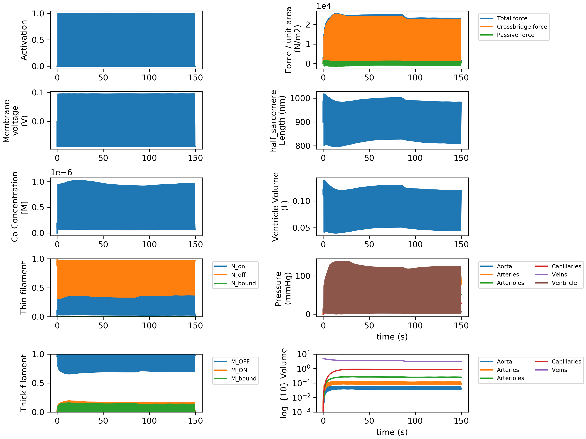
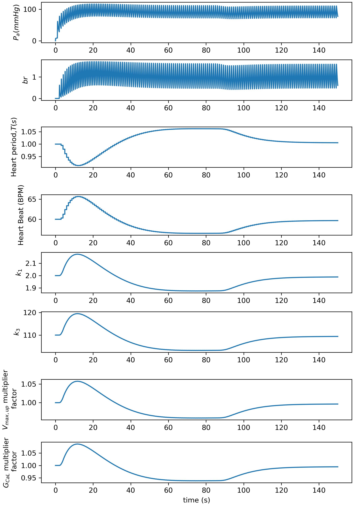
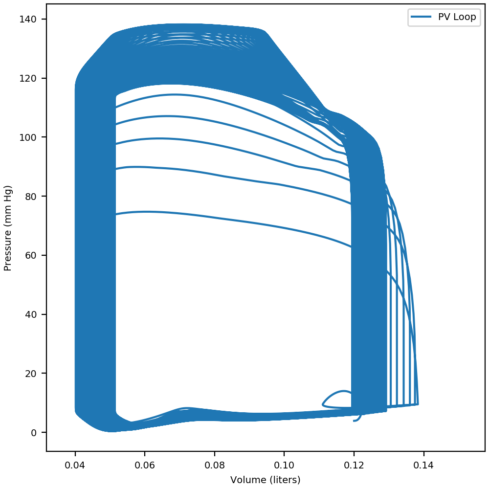
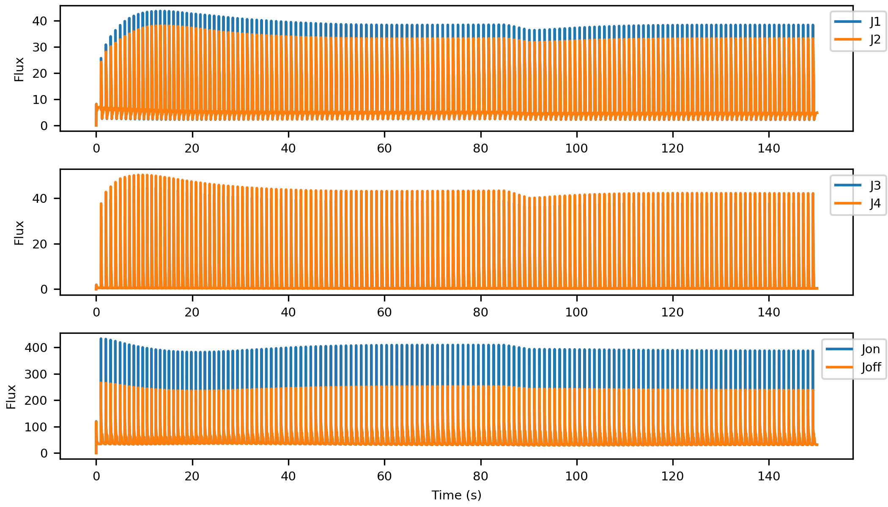
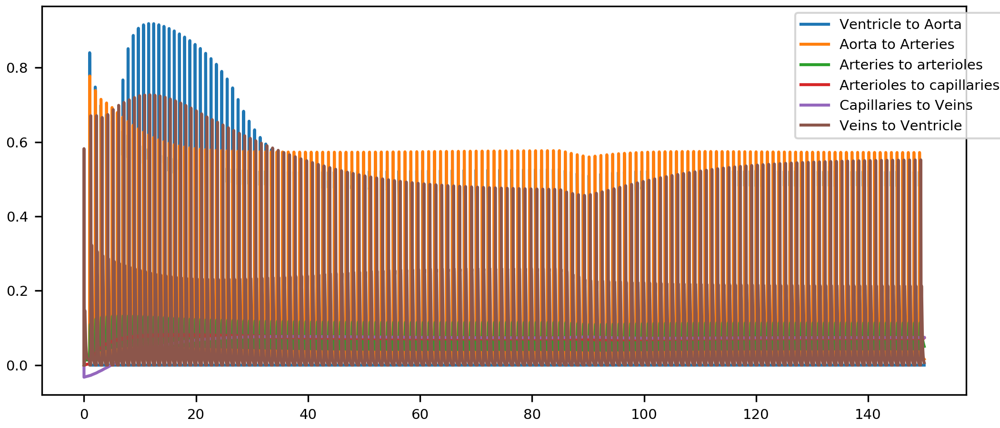

Baroreceptor Perturbed System
Instruction
-
Lunch Anaconda prompt.
- Navigate to Python_code folder in PyMyoVent’s repository directory:
$ cd path_to_PyMyoVent_repo\Python_code
- Use the following command to run the
Baroreceptordemo with having theperturbationmodule activated.$ python PyMyoVent.py run_defined_model ..\demo_files\baro_pert\baro_pert_model.json- After a few minutes the simulation would be finished.
Note
- In this model, the baroreceptor module is activated by putting
"baro_scheme": ["simple_baroreceptor"]in the instruction file. - The baroreceptor module starts to regulate the arterial pressure after
"start_index":[2000], which can be modified by user. - The baroreceptor module tries to maintain the mean arterial pressure at
90 mm Hgby continously regulation of heart rate, myofilaments contractility, and calcium handling. - This model uses an electrophys model proposed by Ten Tusscher.
- Perturbation module is activated by putting
"perturbation_activation":[true]in the instruction file. - To apply a blood volume perturbation representing the loosing of 10% of total blood volume through the veins during 5 seconds starting from the time of 85 seconds to 90 seconds you should have the following change in the
"perturbation"section of the instruction file:
"volume":{
"start_index": [85000],
"stop_index": [90000],
"increment": [-1e-4]
Instruction file
- The instruction file is written in JSON format and is located at
path_to_PyMyoVent_repo\demo_files\baro_pert\baro_pert_model.json.
{
"output_parameters": {
"excel_file": ["..\\temp\\baro_pert\\baro_pert.xlsx"],
"input_file": ["..\\temp\\baro_pert\\baro_pert.json"],
"summary_figure": ["..\\temp\\baro_pert\\baro_pert_summary.png"],
"force_length": ["..\\temp\\baro_pert\\baro_pert_F_L.png"],
"pv_figure": ["..\\temp\\baro_pert\\baro_pert_pv.png"],
"baro_figure": ["..\\temp\\baro_pert\\baro_pert_baro.png"],
"flows_figure": ["..\\temp\\baro_pert\\baro_pert_flows.png"],
"hs_fluxes_figure": ["..\\temp\\baro_pert\\baro_pert_hs_fluxes.png"],
"multi_threading":["..\\temp\\baro_pert\\baro_pert_multi_thread.png"]
},
"baroreflex": {
"baro_scheme": ["simple_baroreceptor"],
"fixed_heart_rate":{
"simulation":{
"no_of_time_points": [160000],
"time_step": [0.001],
"duty_ratio": [0.003],
"basal_heart_period": [1,"s"]
}
},
"simple_baroreceptor":{
"simulation":{
"start_index":[2000],
"memory":[2,"s"],
"no_of_time_points": [150000],
"time_step": [0.001],
"duty_ratio": [0.003],
"basal_heart_period": [1,"s"]
},
"afferent": {
"bc_max": [2],
"bc_min": [0],
"slope": [15,"mmHg"],
"P_n": [90,"mmHg"]
},
"regulation":{
"heart_period":{
"G_T": [0.03]
},
"k_1":{
"G_k1": [-0.03]
},
"k_3":{
"G_k3": [-0.03]
},
"ca_uptake":{
"G_up": [-0.02]
},
"g_cal":{
"G_gcal": [-0.03]
}
}
}
},
"perturbations": {
"perturbation_activation":[true],
"volume":{
"start_index": [85000],
"stop_index": [90000],
"increment": [-1e-4]
},
"valve":{
"aortic":{
"start_index": [0],
"stop_index": [505000],
"increment": [0]
},
"mitral":{
"start_index": [400000],
"stop_index": [1000000],
"increment": [0]
}
},
"compliance": {
"aorta":{
"start_index": [200000],
"stop_index": [205000],
"increment": [0]
},
"capillaries": {
"start_index": [200000],
"stop_index": [205000],
"increment": [0]
},
"venous":{
"start_index": [500000],
"stop_index": [505000],
"increment": [0]
}
},
"resistance": {
"aorta":{
"start_index": [400000],
"stop_index": [410000],
"increment": [0]
},
"capillaries": {
"start_index": [500000],
"stop_index": [505000],
"increment": [0]
},
"venous":{
"start_index": [85000],
"stop_index": [90000],
"increment": [0]
},
"ventricle":{
"start_index": [500000],
"stop_index": [505000],
"increment": [0]
}
},
"myosim":{
"k_1":{
"start_index": [25000],
"stop_index": [25001],
"increment": [0]
},
"k_2":{
"start_index": [25000],
"stop_index": [35000],
"increment": [0.0]
},
"k_4_0":{
"start_index": [200000],
"stop_index": [210000],
"increment": [0]
}
},
"ca_handling":{
"ca_uptake":{
"start_index": [40000],
"stop_index": [41000],
"increment": [0]
},
"ca_leak":{
"start_index": [40000],
"stop_index": [41000],
"increment": [0]
},
"g_cal":{
"start_index": [40000],
"stop_index": [41000],
"increment": [0]
}
}
},
"circulation":{
"no_of_compartments": [6],
"blood":{
"volume":[5,"liters"]
},
"aorta":{
"resistance": [40,"s"],
"compliance": [0.0005,"liter_per_mmHg"]
},
"arteries":{
"resistance": [20,"s"],
"compliance": [0.0011,"liter_per_mmHg"]
},
"arterioles":{
"resistance": [520,"s"],
"compliance": [0.005,"liter_per_mmHg"]
},
"capillaries":{
"resistance": [310,"s"],
"compliance": [0.03,"liter_per_mmHg"]
},
"veins":{
"resistance": [300,"s"],
"compliance": [0.5,"liter_per_mmHg"]
},
"ventricle":{
"resistance": [10,"s"],
"wall_volume": [0.1,"liters"],
"slack_volume": [0.08,"liters"],
"wall_density": [1055,"g/l"],
"body_surface_area": [1.90,"m^2"]
}
},
"half_sarcomere":{
"max_rate": [5000,"s^-1"],
"temperature": [288, "Kelvin"],
"cb_number_density": [6.9e16, "number of cb's/m^2"],
"initial_hs_length": [900, "nm"],
"ATPase_activation":[false],
"delta_energy":[70,"kJ/mol"],
"avagadro_number":[6.02e23,"mol^-1"],
"referench_hs_length":[1100,"nm"],
"myofilaments":{
"kinetic_scheme": ["3state_with_SRX"],
"k_1": [2,"s^-1"],
"k_force": [1e-3, "(N^-1)(m^2)"],
"k_2": [200, "s^-1"],
"k_3": [110, "(nm^-1)(s^-1)"],
"k_4_0": [200, "s^-1"],
"k_4_1": [0.3, "nm^-4"],
"k_cb": [0.001, "N*m^-1"],
"x_ps": [5, "nm"],
"k_on": [6e8, "(M^-1)(s^-1)"],
"k_off": [200, "s^-1"],
"k_coop": [5],
"bin_min": [-10, "nm"],
"bin_max": [10, "nm"],
"bin_width": [1, "nm"],
"filament_compliance_factor": [0.5],
"thick_filament_length": [815, "nm"],
"thin_filament_length": [1120, "nm"],
"bare_zone_length": [80, "nm"],
"k_falloff": [0.0024],
"passive_mode": ["exponential"],
"passive_exp_sigma": [500],
"passive_exp_L": [80],
"passive_l_slack": [900, "nm"]
},
"membranes": {
"kinetic_scheme": ["Ten_Tusscher_2004"],
"simple_2_compartment":{
"Ca_content": [1e-3],
"k_leak": [2e-3],
"k_act": [5e-2],
"k_serca": [10.0]
},
"Ten_Tusscher_2004":{
"g_to_factor": [1],
"g_Kr_factor": [1],
"g_Ks_factor": [1],
"Ca_a_rel_factor": [1],
"Ca_V_leak_factor": [1],
"Ca_Vmax_up_factor": [1],
"g_CaL_factor": [1]
}
}
},
"growth": {
"growth_activation": [false],
"start_index": [50000],
"moving_average_window": [5000],
"driven_signal": ["stress"],
"concenrtric":{
"G_stress_driven":[1e-6],
"G_ATPase_driven":[1]
},
"eccentric":{
"G_number_of_hs":[-3e-6],
"G_ATPase_driven":[-2]
}
},
"profiling":{
"profiling_activation":[false]
},
"saving_to_spreadsheet":{
"saving_data_activation":[false],
"start_index":[0],
"stop_index":[1000]
},
"multi_threads" :{
"multithreading_activation":[false],
"parameters_in":{
"G_T": {
"values":[25,50,100,150,175],
"param_out":["heart_rate"],
"section": ["baroreflex"]
},
"G_k1": {
"values":[25,50,100,150,175],
"param_out":["k_1"],
"section": ["baroreflex"]
},
"G_k3": {
"values":[25,50,100,150,175],
"param_out":["k_3"],
"section": ["baroreflex"]
},
"G_up": {
"values":[25,50,100,150,175],
"param_out":["Ca_Vmax_up_factor"],
"section": ["baroreflex"]
},
"G_gcal": {
"values":[25,50,100,150,175],
"param_out":["g_CaL_factor"],
"section": ["baroreflex"]
}
},
"output_main_folder": ["..\\temp\\baro_pert\\demo_i_j\\demo_i_j.json"]
}
}
Outputs
- Simmulation summary output

- Baroreceptor output

- P_V loop output

-
Fluxes output 
-
Blood flows output

New User Defined Perturbation
- The user can apply any sort of possible perturbation to the simulation by defining the
"start_index","stop_index", and"increment"for the desired type of perturbation in the"perturbation"section of the instruction file.- For example, if you want to increase the Aortic resistance by 200% to represent the aortic stenosis you should do:
- Determine the starting and stopping times points for the perturbation in seconds.
- Then convert them into the time step’s unit of the simulation by:
"start_index" = starting time in seconds/"time_step""stop_index" = stopping time in seconds/"time_step"
- Assign the
"start_index"and"stop_index"in the instruction file. - Calculate the perturbation
"increment"for each given time step as follows:- Calculate the amount of change you need tp apply:
Total_change = Final_value - Initial_value- Calculate the amount of incremental change by:
"increment" = Total_change/("stop_index" - "start_index")
- For example, if you want to increase the Aortic resistance by 200% to represent the aortic stenosis you should do: